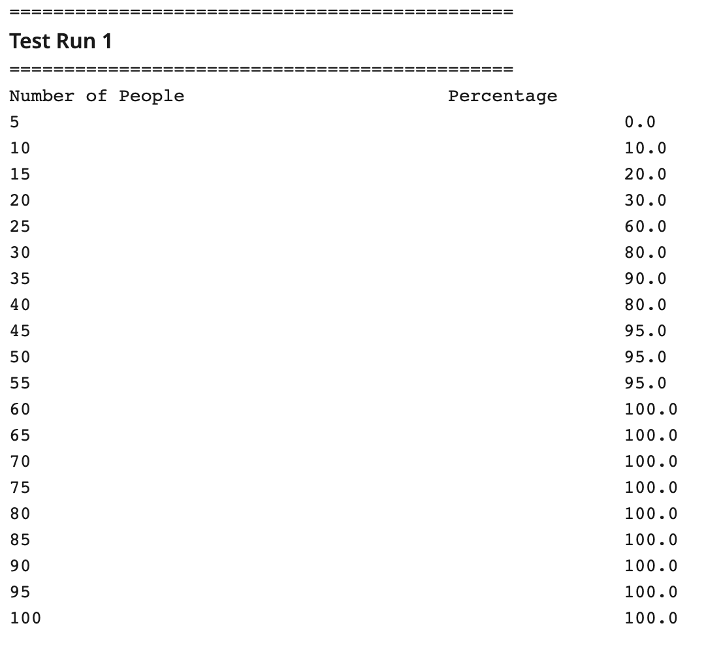

Hi, my name is Oriana! I'm originally from Venezuela, and I'm a third-year computer science student at the University of San Diego.
Outside of class, I work as an IT Intern at Mascot Factory, where I automate manual processes, like replacing hand-built monthly reports with automatic dashboards and turning a 10–20 image-a-day design task into an automated pipeline. I'm also a College Corps Fellow with TRIO Upward Bound at USD, where I mentor first-generation and low-income high school students as they prepare for college. What I love the most about computer science is building tools that make people's work easier.
When I'm not a student or working, you can find me at the beach watching the sunset, working out, or spending time with my family and friends.

Motivation of the project
Instead of relying only on the math aspect, our program tests the paradox by experiment. It program simulates rooms of 5, 10, 15, all the way up to 100 people, giving each person a random birthday. For each room, it will run 20 trials and then record how often at least two people shared the same birthday. The results will then be print as a table, so you can watch the chance of a match go up from almost nothing in small groups to nearly 100% once the room gets to around 50 people.
We built the program in Java using object-oriented design, splitting the work into four classes. A Birthday represents one person and creates a random, valid month and day (no February 30th). A Trial fills a room with people and checks whether any two share a birthday. An Experiment runs 20 trials for one room size and calculates the percentage that had a match. Finally, the Simulation class runs an experiment for every room size and prints the results. The whole program shares a single random number generator, so every birthday comes from the same source of randomness.
Implementation
ocastillo@sandiego.edu